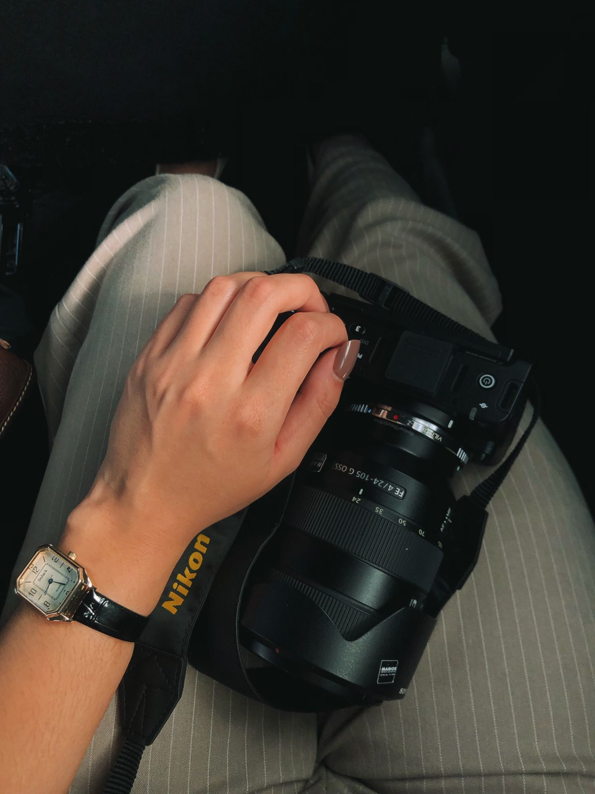

Fotografia & Filme
Capturando a essência
Capturando a essência
do cotidiano.
Ensaios femininos e casamentos registrados com alma e sensibilidade.
Ver Portfólio
01
Retratos
Retratos
Femininos
A força e a autenticidade da identidade feminina capturadas através de uma estética editorial e atemporal.

02
Legado &
Legado &
Família
Registros afetivos e conexões familiares reais, preservando a naturalidade de momentos que se tornam herança.

03
Casamentos
Casamentos
e Histórias
A narrativa documental do seu grande dia, focando na emoção genuína e nos detalhes que contam sua história.

04
Essência em
Essência em
Movimento
Filmes curtos com estética intimista, focando na poesia dos gestos e na luz que molda o momento.
"A fotografia é o registro de um silêncio que diz tudo."
— Emily Feitosa